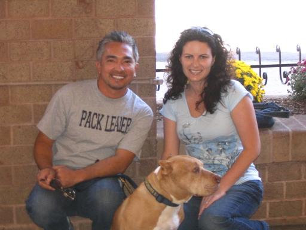

About The Pet Stylist
The mobile pet stylist has been grooming for 7 years and is a former veterinary assistant and a former animal shelter staff member.
The stylist is a member of the National Dog Groomers Association of America. The NDGAA symbol signifies the highest quality of grooming services available.
The stylist also attends 3-5 continuing education seminars throughout each year to keep up with changes in the industry that affect your pet.